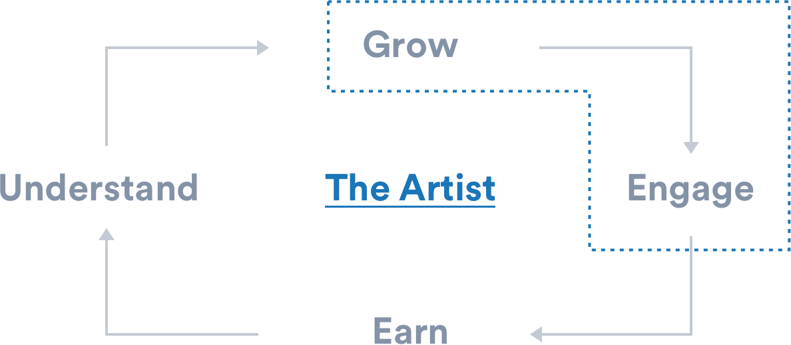
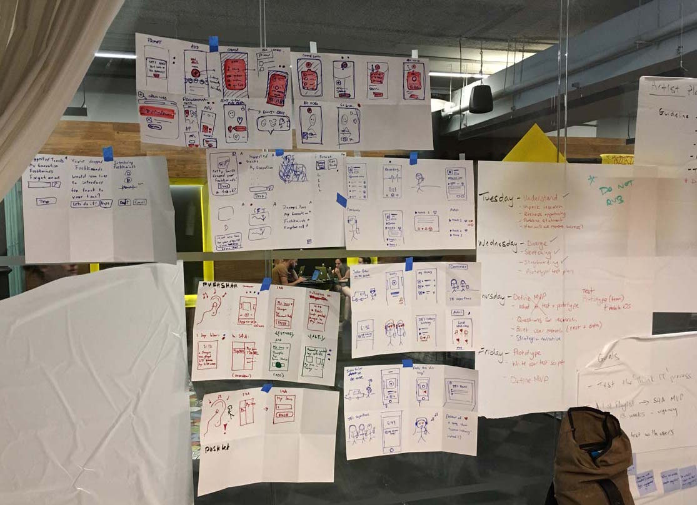
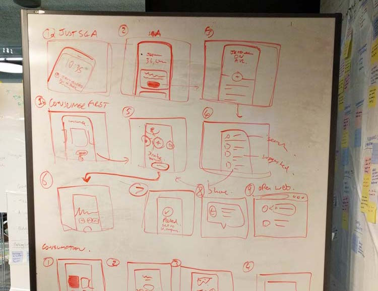
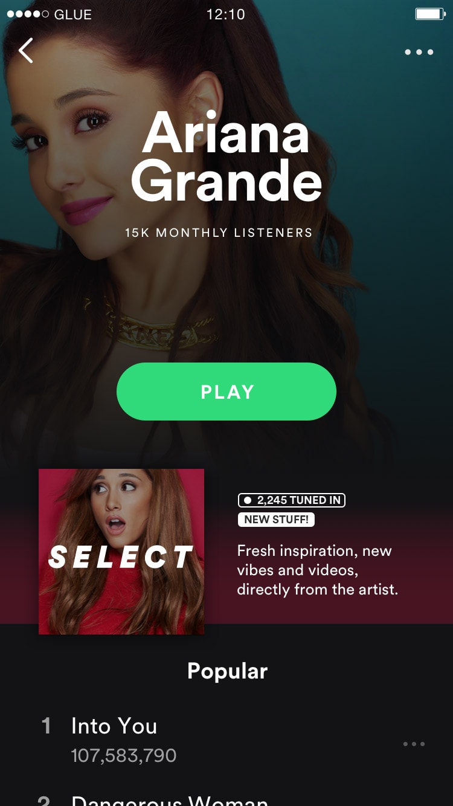
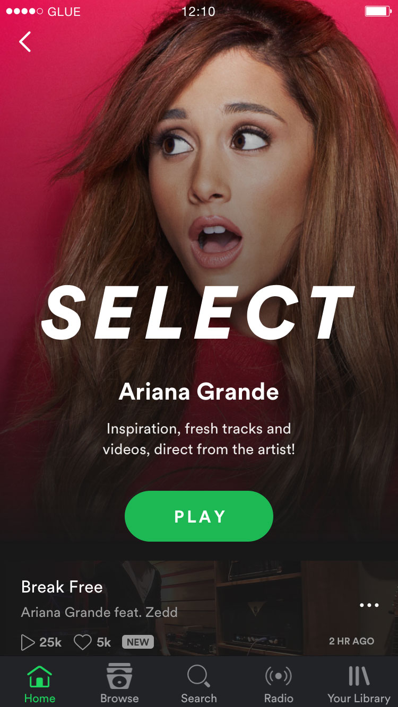
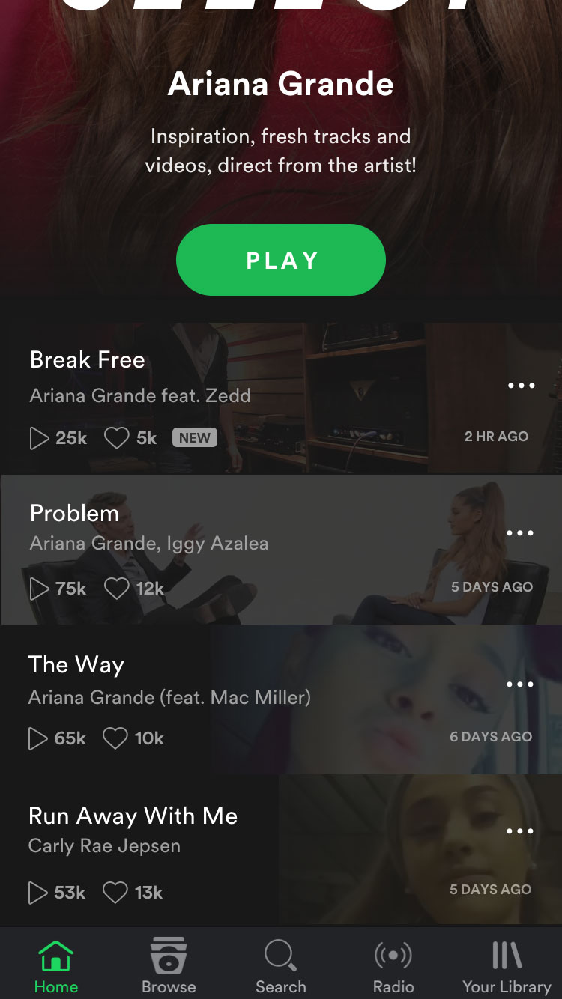
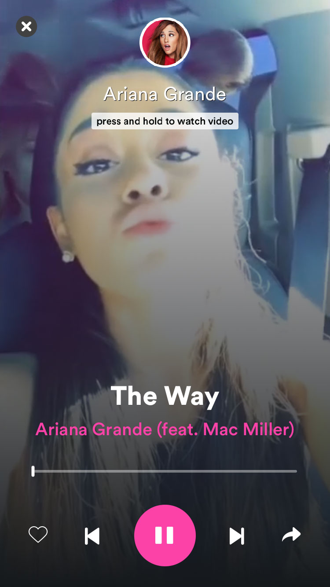
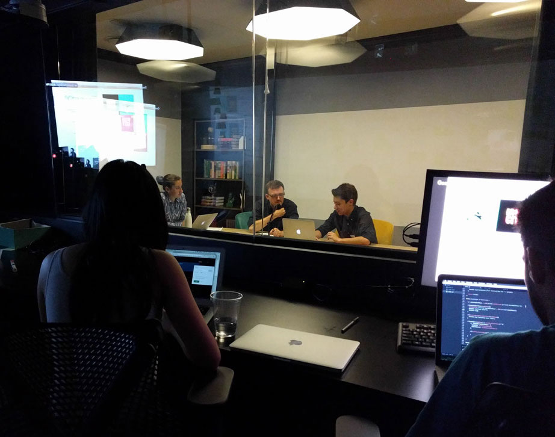

I worked on the Creator team, which builds products to connect Artists and Fans. The Creator team is structured around the artists' core needs:

Artist Playlists Redesign
Artist Playlists are just regular playlists created by the artist (here's an example from Sia). Through these playlists, fans can listen to their artist's favorite songs and connect through music. However, there were a couple of issues with the current design.
Problem
How can we increase artist-to-fan engagement and allow artists to grow their audience on Spotify?
Spotify artist Net Promoter Score (aNPS): -37
Artist have no control over their Spotify experience:
"What can I do? I can't do anything to affect whether I'm featured on a Spotify playlist, or help my song blow up or even support friends." - XYLØ
Hypothesis
A music-first broadcast channel with guaranteed reach, that artists own.
Goals
Build something native to the Spotify experience (music)
Give all artists a voice, and powerful tools to reach fans, whatever size
Provide feedback loops that let artists "feel" the presence of their fans
Features
Different types of media, like photos and video
Fan "reactions", to generate feedback loops
Success Metric
50% of top 5k Monthly Active Artists by end-of-year 2017
Design Sprint
We kicked off the project with the Google Ventures Design Sprint, working with a small team of engineers, designers, and PMs to go from concept to working product vision prototype.
Lots of sketching and whiteboarding involved!


We sketched different user flows, concepts, and narrowed down the concept to a couple of executable ideas.
In the end, we branched off into two mediums of artist engagement: video and audio. For the rest of the week, I set out to prototype a vision for integrating video with artist playlists.
Video Concept - User Flow




With this very first iteration, I was trying to address the following needs:
Stay on the "music-first" format
How can users interact with the media and toggle between music / video?
How can we incorporate feedback in a meaningful and useful way?
Video Concept - Prototyping
If the FramerJS prototype doesn't work, try this link or check out this video!
User Testing
Since our prototype / design was very similar to social media today (like Snapchat, Instagram), we chose users who prominently followed artists on traditional social media. We also tested the prototype with a mix of free and paid users.

Users didn't understand that the playlist was created by the artist!
After playing with the prototype, they still didn't associate the new playlist with the artist themselves. This was a huge potential turnoff to users, because then there was essentially no value proposition, since the entire point of artist playlists was to increase artist-to-fan engagement.
Other Learnings
The video content is key, and difficult to test for
Some users were confused by songs that weren't by the playlist artist (e.g. Ariana Grande's song in Meghan Trainor's playlist)
Iteration 2
Before working on the next iteration, I though of some fundamental principles the design had to fulfill. What kind of feelings did we want artist playlists to evoke?
Personal, authentic, informal, real
New Ideas
Added an introduction video by an artist
Replaced the playlist cover image to a series of images shot by the artist, not a professional photo
Slightly altered the copy / wording to use more first-person pronouns ("Check out my playlist!")
After testing the vision prototypes for video, I started to explore different media to include - this time, audio commentary by the artist. Since the project was long-term, the team wanted to start with something more feasible and testable.
Audio state switching
Integration with current iOS design
Integration with Playlist to Shows (a work in progress by another team)
Conclusion
The team at Spotify is currently working on an Artist-facing creation app, and also integrating some of my designs into the consumer app. They plan on testing with a small group of artists and users and iterating before launching next year.